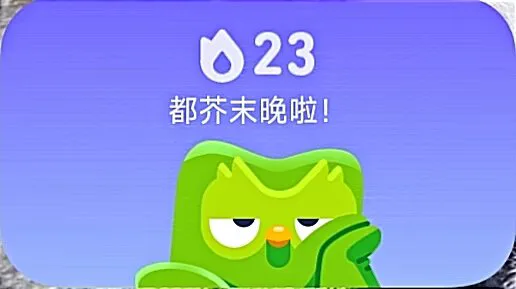
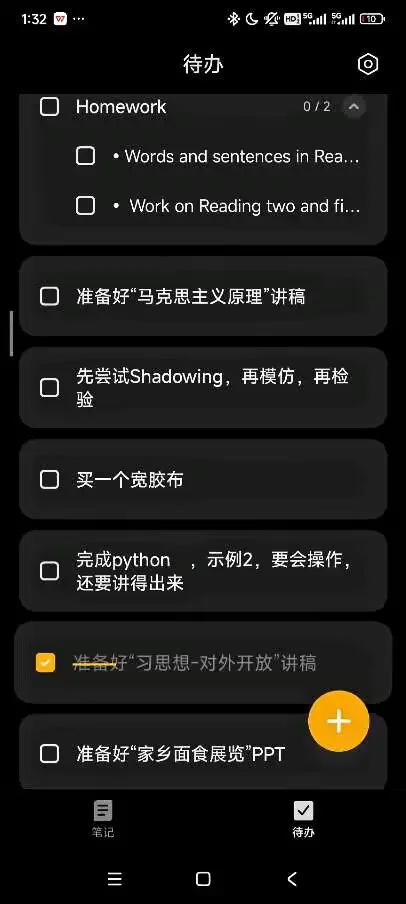

Journal · 2024-10-29
湖北省武汉市
2024年10月29日 01:52
学在华科大，什么都要临时学！
学习PPT的“平滑切换”，
学习Pycharm的快捷操作，
学习文本资料的检索、甄别、整理、内化，
每周阅读完一本通识类的书，写读书报告。
更可怕的是，有时不得不连夜“学以致用”！
本科教育教学评估阶段，我都快成教研员了，
脸都要熬黑了。。。
人工智能生成的是什么玩意？豆包逗我啊！
夏佳一 : 豆包不行，试试Kimi
2024年10月29日 07:58
柴江赣北 回复夏佳一 : 豆包，文心一言，Kimi智能助手，智谱清言，讯飞星火，这五个AI都用过了
2024年10月29日 12:52
柴江赣北 : 生成的都是些废话连篇的垃圾玩意儿。。。
2024年10月29日 12:53


Oct 29, 2024 01:52
Studying at HUST means learning everything on the fly!
Learning PowerPoint's “Morph” transition,
Learning PyCharm's shortcuts,
Learning to search, screen, organize, and internalize text materials,
Finishing one general-education book every week and writing a reading report.
What's scarier is sometimes having to “put it to use” overnight!
During the undergraduate education assessment, I almost turned into a teaching researcher,
my face is about to turn dark from staying up so late...
What is this stuff that the AI generated? Doubao is messing with me!
夏佳一 : Doubao is no good, try Kimi.
Oct 29, 2024 07:58
柴江赣北 回复夏佳一 : Doubao, ERNIE Bot, Kimi Assistant, Zhipu Qingyan, iFlytek Spark — I've tried all five of these AIs.
Oct 29, 2024 12:52
柴江赣北 : Everything they generate is just long-winded garbage...
Oct 29, 2024 12:53
29 oct. 2024 01:52
Étudier à HUST, c'est tout apprendre sur le tas !
Apprendre la transition « Morph » de PowerPoint,
Apprendre les raccourcis de PyCharm,
Apprendre à rechercher, trier, organiser et assimiler des documents textuels,
Terminer chaque semaine la lecture d'un livre de culture générale et en rédiger une fiche de lecture.
Pire encore, il faut parfois « mettre en pratique » tout de suite, même en pleine nuit !
Pendant la phase d'évaluation de l'enseignement de premier cycle, j'ai failli devenir chercheur en pédagogie,
mon visage va finir par noircir à force de veiller...
C'est quoi, ce truc généré par l'IA ? Doubao se moque de moi !
夏佳一 : Doubao n'est pas terrible, essaie Kimi.
29 oct. 2024 07:58
柴江赣北 回复夏佳一 : Doubao, ERNIE Bot, l'assistant Kimi, Zhipu Qingyan, iFlytek Spark — j'ai déjà essayé ces cinq IA.
29 oct. 2024 12:52
柴江赣北 : Tout ce qu'ils génèrent, c'est du verbiage sans intérêt...
29 oct. 2024 12:53
29.10.2024 01:52
Am HUST muss man alles spontan lernen!
PowerPoints „Morph“-Übergang lernen,
PyCharms Kurzbefehle lernen,
Lernen, Textmaterialien zu recherchieren, zu sichten, zu ordnen und zu verinnerlichen,
Jede Woche ein allgemeinbildendes Buch fertig lesen und einen Lesebericht schreiben.
Schlimmer noch: Manchmal muss man das Gelernte über Nacht gleich „in die Praxis umsetzen“!
In der Evaluierungsphase der grundständigen Lehre bin ich fast zum Unterrichtsforscher geworden,
mein Gesicht wird vor lauter Durchmachen schon ganz dunkel...
Was soll das sein, was die KI da erzeugt hat? Doubao veräppelt mich!
夏佳一 : Doubao taugt nichts, versuch Kimi.
29.10.2024 07:58
柴江赣北 回复夏佳一 : Doubao, ERNIE Bot, der Kimi-Assistent, Zhipu Qingyan, iFlytek Spark – diese fünf KIs habe ich alle schon ausprobiert.
29.10.2024 12:52
柴江赣北 : Was die erzeugen, ist alles nur langatmiger Müll...
29.10.2024 12:53